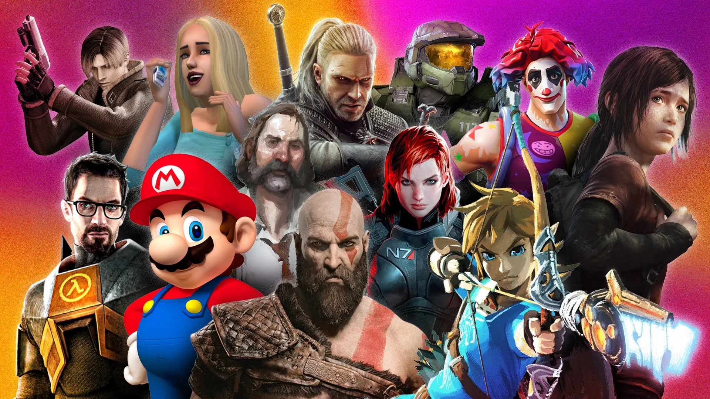

Le top 5 de Simon et Gabriel
des jeux vidéo
| Accueil | Top 5 | Actus | Tutos |
|---|

Nous sommes Gabriel et Simon, amateurs de jeux vidéo.
Nous partageons avec vous sur ce site nos expériences de joueur et
notre point de vue perso sur différents jeux vidéo.
Parce que jouer, c'est bien,
mais apprendre, c'est mieux !
Projet SNT - Gabriel Bourneau et Simon Labrot - Dernière mise à jour : 28/10/2026